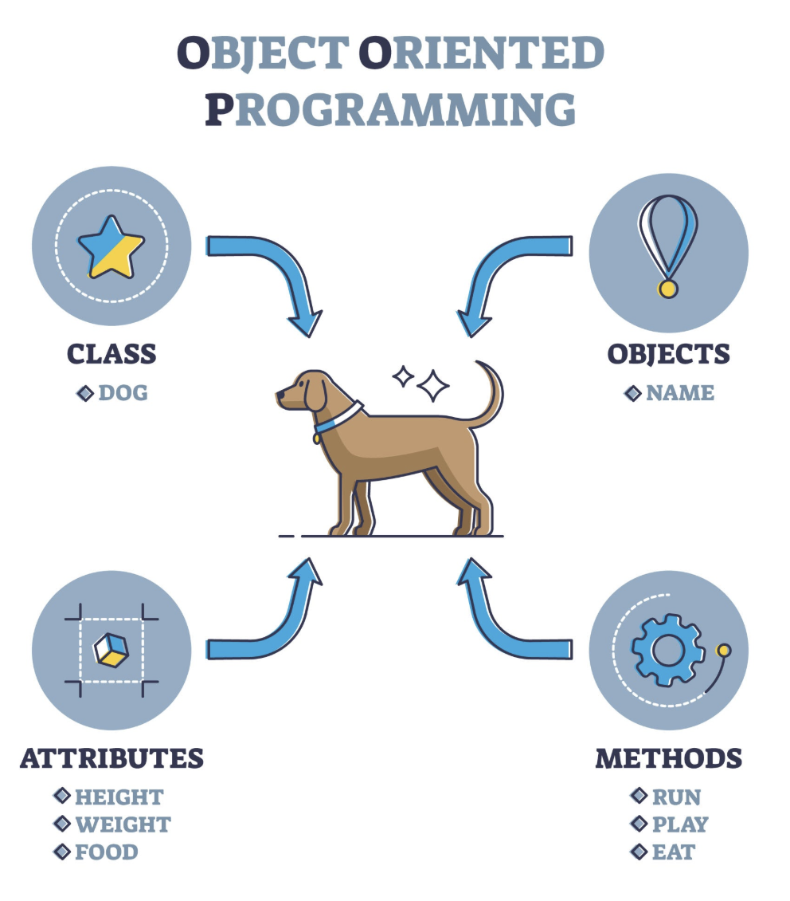
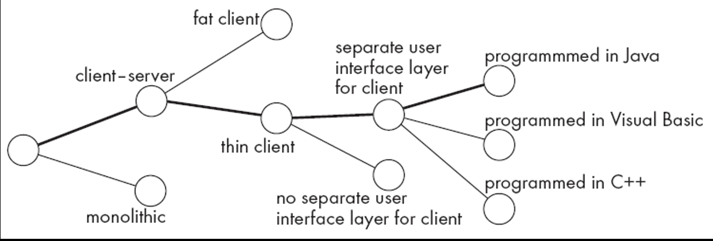
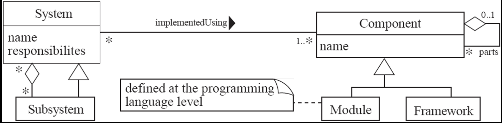
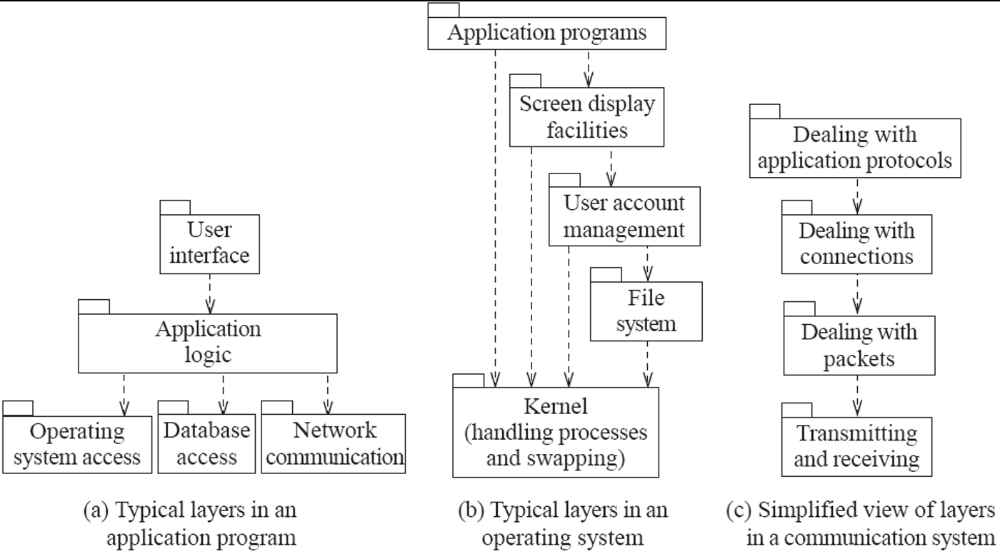
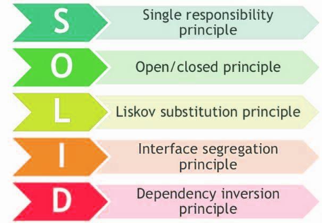

CHAPTER 1
THE NATURE OF SOFTWARE
Understanding software is different from understanding traditional engineering (like building a bridge) because software is intangible. You cannot touch it or see its physical dimensions.
Key Characteristics:
- Intangibility: Because software is intangible, it is hard to understand development effort. Managers cannot simply look at a "pile of bricks" to see how much work is left.
- Reproduction vs. Manufacturing: In traditional engineering, "manufacturing" is the most expensive stage.
- In software, the cost is in its development. Once the code is written, it is easy to reproduce (copying files costs almost nothing).
- Labor-Intensive: Software creation relies heavily on human brainpower. It is hard to automate the creative process of coding, making the industry very dependent on skilled labor.
- Quality and "Hacking": Because untrained people can hack something together, a program might look like it works on the surface, but quality problems are hard to notice until the system fails or needs maintenance.
- Ease of Modification: Software is easy to modify, which is a double-edged sword. People often make changes without fully understanding the original logic, leading to bugs.
Does Software Wear Out?
Unlike a car tire, software does not ‘wear out’ through physical friction. Instead, it deteriorates (gets worse) over time because:
- Changes are made erroneously (with errors).
- Changes are made in ways that were not anticipated, increasing the system's complexity until it becomes unmanageable.
SOFTWARE CRISIS
The "Software Crisis" refers to the long-standing problems in the industry regarding how software is produced.
- Design Issues: Much software has poor design, and as systems grow, the design often gets worse.
- The "Late & Over Budget" Problem: A huge percentage of software projects are either never delivered or fail to meet deadlines and financial limits.
- The Conflict: There is a massive demand for new software, and customers want it to be high quality and produced rapidly. This creates a "perpetual crisis" because our ability to build complex systems often lags behind our desire for them.
TYPES OF SOFTWARE
Categorization by Market:
| Type | Description |
|---|---|
| Custom | Developed specifically for a specific customer. |
| Generic | Sold on the open market to many users. Also known as COTS (Commercial Off The Shelf). |
| Shrink-wrapped | High-volume generic software (like old-school boxed software). |
| Embedded | Built directly into hardware (like a microwave controller). These are very hard to change. |
Categorization by Function:
| Software Type | Description |
|---|---|
| Real-time software | Control and monitoring systems that must react immediately to inputs; safety is often critical. |
| Data processing software | Used mainly to run businesses (e.g., banking systems); accuracy and data security are key. |
| Hybrid | Combines real-time and data processing aspects (e.g., banking apps with real-time stock updates). |
WHAT IS SOFTWARE ENGINEERING
-
The process of solving customers’ problems by the systematic development and evolution of large, high-quality software systems within cost, time and other constraints
-
Other definitions:
- IEEE: (1) the application of a systematic, disciplined, quantifiable approach to the development, operation, maintenance of software; that is, the application of engineering to software. (2) The study of approaches as in (1).
- The Canadian Standards Association: The systematic activities involved in the design, implementation and testing of software to optimize its production and support.
The Core Definition:
- It is the process of solving customers’ problems through the systematic development and evolution of large, high-quality software systems while respecting cost, time, and other constraints.
- Let's break down those bold terms:
Solving customers’ problems
- This is the ultimate goal.
- Software engineers must communicate effectively to understand what the problem actually is.
- Sometimes, the best solution is to buy an existing product rather than build a new one.
- Important: Adding "cool" but unnecessary features is not engineering; if it doesn't help solve the problem, it shouldn't be there.
Systematic development and evolution
- Engineering means using organized and disciplined techniques rather than "hacking."
- Many of these techniques are formally standardized (e.g., by IEEE or ISO).
- Evolution: Most work in the industry isn't starting from scratch; it is the "evolution" (updating and changing) of existing systems.
Large, high quality software systems
- Why do we need "engineering"? Because large systems cannot be completely understood by one person.
- This requires teamwork and coordination.
- Key Challenge: How to divide the work into parts and ensure those parts work properly together.
Cost, time and other constraints
- Resources (money, people, time) are finite.
- Inaccurate estimates of how much time or money a project needs are a leading cause of project failures.
STAKEHOLDERS IN SOFTWARE ENGINEERING
| Stakeholder Role | Description |
|---|---|
| Users | People who directly use the software to perform tasks. |
| Customers | Individuals or organizations that pay for the software; may differ from users. |
| Software Developers | Technical team responsible for building the software, including requirement specialists, database specialists, programmers, and configuration management specialists. |
| Development Managers | People who oversee the project, including planning, budget, and team management. |
SOFTWARE QUALITY
| Quality Attribute | Definition |
|---|---|
| Usability | The ease with which users can learn the system and quickly accomplish their tasks. |
| Efficiency | The ability of the system to perform its functions without wasting resources such as CPU time and memory. |
| Reliability | The degree to which the system performs its required functions correctly without failure. |
| Maintainability | The ease with which the system can be modified, fixed, or improved over time. |
| Reusability | The extent to which system components can be reused in other projects without the need for reprogramming. |
SHORT TERM VS LONG TERM QUALITY
| Short Term | Long Term |
|---|---|
| Does the software meet the customer’s immediate needs? | Maintainability |
| Is it sufficiently efficient? | Customer’s future needs |
| Can it handle the current volume of data? | Scalability: Can the software handle larger volumes of data? |
SOFTWARE ENGINEERING PROJECTS
In the professional world, you rarely start with a blank page. Most work involves Legacy Systems (older systems already in use).
Project Categories:
| Project Type | Description |
|---|---|
| Corrective Projects | Fixing defects or bugs in the software. |
| Adaptive Projects | Modifying the system to adapt to environmental changes (e.g., new OS, database, regulations). |
| Enhancement Projects | Adding new features or functionalities for users. |
| Reengineering / Perfective Projects | Improving internal code quality and maintainability without changing user-visible behavior. |
Green vs Brown:
| Green Field Projects | Brown Field Projects |
|---|---|
| New development | Development of new software on top of existing (legacy) software |
| Significantly less common than evolutionary projects | Rebuilding a system from an existing project |
Framework-Based Projects:
- Instead of "Green Field Development" (starting from scratch), many projects use a Framework.
- A Framework is like a "half-finished" application. It provides the structure but misses specific details (like specific rules of an organization).
- You plug together components that are already developed.
- Benefit: You reuse reliable software, which saves time and reduces errors.
CHAPTER 2
Object-Oriented Programming (OOP) Essentials
Java is an OOP language. This paradigm brings together data and behavior (methods) in a single location called an Object.

OBJECT
- This is an instance of a class. If "Car" is the class, "My Blue BMW" is the object.
- States: The data (e.g., speed, fuel level).
- Behaviors: The operations/methods (e.g., accelerate, brake).
- Communication: An object performs an operation when it receives a request (or message) from a client.
Example:
class Car {
double speed;
double fuelLevel;
void accelerate() {
}
void brake() {
}
}
Car myBlueBMW = new Car();
[ object ] <----> [ class ]
Characteristics of Objects
| Characteristic | Definition |
|---|---|
| Abstraction | A process of showing only the relevant data of an object while hiding unnecessary details from the user. |
| Encapsulation | The concept of binding an object's state (fields) and behavior (methods) together into a single unit. |
| Message Passing | One object interacts with another object by invoking methods on that object. It is also referred as Method Invocation. |
CLASS
- A class is a blueprint or template from which objects are created.
- It defines the structure and behavior shared by all objects of that type.
- Fields (Attributes): Variables that hold the data for an object (e.g., color, speed).
- Methods (Operations): Functions that define what the object can do (e.g., accelerate, stop).
- Constructor: A special method used to initialize new objects.
public class Car {
// Fields (state)
String color;
double speed;
// Constructor
Car(String color, double speed) {
this.color = color;
this.speed = speed;
}
// Method (behavior)
void accelerate() {
speed += 10;
System.out.println("Accelerating. New speed: " + speed);
}
public static void main(String args[]) {
// Creating objects from the Class blueprint
Car myCar = new Car("Red", 0);
// Behaviors
myCar.accelerate();
}
}
CONSTRUCTOR
- The Constructor is a special block of code used to initialize objects.
- It has the same name as the class.
- It does not return a value (not even void).
- In Java, every class has a default constructor (empty parameters) if you don't write one.
myClass myObject = new myClass();
Object Implementation
+------------------------+
| ClassName |
+------------------------+
| Operation1() |
| Type Operation2() |
| ... |
+------------------------+
| instanceVariable1 |
| Type instanceVariable2 |
| ... |
+------------------------+
- A class defines the object’s
- internal data
- representation
- operations
- An object is an instance of a class.
[ Instantiator ] - - - - - - - - > [ Instantiatee ]
Type
- An object is said to have the type C if it accepts all requests for the operations defined in the interface named C.
- An object may have many types.
- Widely different objects can share a type.
- A type is a subtype of another if its interface contains the interface of its super type.
- A subtype inherits the interface of its super type.
Access Specifiers
| Access Specifier | Accessible From | Description |
|---|---|---|
public |
Everywhere | Members are accessible from any other class or object. |
private |
Same class only | Members can be accessed only by methods within the class where they are declared. |
protected |
Same class and subclasses | Members are accessible within the declaring class and its subclasses. |
default |
Same package | Members are accessible only within the same package when no access specifier is specified. |
Subclassing
Subclassing is the mechanism for code reuse.
- Inheritance: The subclass inherits all data (fields) and operations (methods) from the super class (depending on visibility/access modifiers).
- Refining & Redefining: Subclasses don't just copy; they can refine (improve) or redefine behaviors.
- Overriding: This is the act of a subclass providing its own version of a method already defined in the parent.
- Overridden method: The original version in the parent class.
- Overriding method: The new version in the child class.
+--------------+
| ParentClass |
+--------------+
| Operation() |
+--------------+
▲
|
+--------------+
| Subclass |
+--------------+
Abstract Class
- An Abstract Class acts as a template.
- Common Interface: It defines what methods subclasses should have but doesn't always provide the code.
- Abstract Operations: It defers (postpones) the implementation to the subclasses. These methods are declared but have no body.
- Non-instantiable: You cannot create an object (instantiate) of an abstract class. You can only create objects of Concrete Classes (classes that are not abstract).
Example:
abstract class MyAbstractClass {
abstract void myMethod();
void anotherMethod() {
}
}
+----------------------+
| AbstractClass |
+----------------------+
| Operation() |
+----------------------+
▲
|
+----------------------+
| ConcreteSubclass |
+----------------------+ +-----------------------------+
| Operation() * - - - -| - - - - - - - - - > | Implementation pseudocode |
+----------------------+ +-----------------------------+
Abstract Class and Methods in OOPs Concepts
| Abstract | Not Abstract |
|---|---|
| A method that is declared but not defined. Only method signature, no body. | Constructors |
Declared using the abstract keyword. |
Static methods |
| Forces subclasses to provide implementations of the abstract methods or be declared abstract themselves. | Private methods |
| Used to define a contract for subclasses. | Methods declared as final |
If a child does not implement all the abstract methods of parent class (the abstract class), the child class must need to be declared abstract.
Example:
// abstract class
abstract class Animal {
// abstract method
public abstract void animalSound();
}
public class Dog extends Animal {
public void animalSound() {
System.out.println("Woof");
}
public static void main(String args[]) {
Animal obj = new Dog();
obj.animalSound();
}
}
- In this example we have an abstract class Animal that has an abstract method
animalSound(): - Since the animal sound differs from one animal to another, there is no point in giving the implementation to this method as every child class must override this method to give its own implementation details.
- Now each animal must have a sound, by making this method abstract we made it compulsory to the child class to give implementation details to this method. This way we ensures that every animal has a sound.
- Hence for such kind of scenarios we generally declare the class as abstract and later concrete classes extend these classes and override the methods accordingly and can have their own methods as well.
abstract class MyAbstractClass {
abstract void myMethod();
void anotherMethod() {
}
}
| Feature 🧩 | extends 🧬 | implements 🤝 |
|---|---|---|
| Used with | Class / Abstract Class | Interface |
| Meaning | is-a relationship 🐶➡️🐾 | can-do ability 💪 |
| Code inheritance | Yes ✅ | No ❌ |
| Multiple usage | Only one ❌ | Multiple ✅ |
| Constructor | Inherited 🏗️ | Not available 🚫 |
| Method implementation | Required if abstract ⚠️ | Always required ⚠️ |
Rules:
Note 1: As we seen in the above example, there are cases when it is difficult or often unnecessary to implement all the methods in parent class. In these cases, we can declare the parent class as abstract, which makes it a special class which is not complete on its own. MyAbstractClass class derived from the abstract class must implement all those methods that are declared as abstract in the parent class.
Note 2: Abstract class cannot be instantiated which means you cannot create the object of it. To use this class, you need to create another class that extends this this class and provides the implementation of abstract methods, then you can use the object of that child class to call non-abstract methods of parent class as well as implemented methods (those that were abstract in parent but implemented in child class).
Note 3: If a child does not implement all the abstract methods of abstract parent class, then the child class must need to be declared abstract as well.
Why can’t we create the object of an abstract class?
abstract class AbstractDemo {
public void myMethod() {
System.out.println("Hello");
}
abstract public void anotherMethod();
}
public class Demo extends AbstractDemo {
public void anotherMethod() {
System.out.print("Abstract method");
}
public static void main(String args[]) {
// error: You can't create object of it
AbstractDemo obj = new AbstractDemo();
obj.anotherMethod();
}
}
Output:
Unresolved compilation problem: Cannot instantiate the type AbstractDemo
- Abstract Classes have abstract methods that have no body so if Java allows you to create object of this class then if someone calls the abstract method using that object then what would happen?
- There would be no actual implementation of the method to invoke. Since an object is concrete but an abstract class is like a template, so you should extend it before you can use it.
Abstract Class vs Concrete Class
| Abstract Class | Concrete Class |
|---|---|
| An abstract class has no use until unless it is extended by some other class. | A class which is not abstract is referred as Concrete Class. |
| If you declare an abstract method in a class, then you must declare the class abstract as well. | You can’t have an abstract method in a concrete class. |
| It’s not always true that an abstract class must have abstract methods; a class without abstract methods can still be marked abstract. | A concrete class cannot be abstract and cannot contain abstract methods. |
| Abstract classes can have non-abstract (concrete) methods as well. | All methods in a concrete class must have implementations. |
| Abstract methods have no body and end with a semicolon (;). | Methods in a concrete class always have a body. |
| An abstract class must be extended and its abstract methods must be overridden. | A concrete class can be instantiated directly. |
| A class must be declared abstract to have abstract methods. | A concrete class cannot declare abstract methods. |
Example:
abstract class MyClass {
public void disp() {
System.out.println("Concrete method of parent class");
}
abstract public void disp2();
}
class Demo extends MyClass {
/* Must Override this method while extending
MyClass
*/
public void disp2() {
System.out.println("overriding abstract method");
}
public static void main(String args[]) {
Demo obj = new Demo();
obj.disp2();
}
}
Output:
overriding abstract method
Super Keyword
- The
superkeyword is a reference variable used to refer to the immediate parent class object. - The use of super keyword
- To access the data members of parent class when both parent and child class have member with same name.
- To explicitly call the no-arg and parameterized constructor of parent class.
- To access the method of parent class when child class has overridden that method.
How to use super keyword to access the variables of parent class?
When you have a variable in child class which is already present in the parent class then in order to access the variable of parent class, you need to use the super keyword.
// Parent class or Superclass or base class
class Superclass {
int num = 100;
}
// Child class or subclass or derived class
class Subclass extends Superclass {
/* The same variable num is declared in the Subclass
which is already present in the Superclass
*/
int num = 110;
void printNumber() {
System.out.println(num);
}
public static void main(String args[]) {
Subclass obj = new Subclass();
obj.printNumber();
}
}
Use of super keyword to invoke constructor of parent class
- When we create the object of subclass, the new keyword invokes the constructor of child class, which implicitly invokes the constructor of parent class. So the order to execution when we create the object of child class is:
- parent class constructor is executed first and then the child class constructor is executed. It happens because compiler itself adds super() (this invokes the no-arg constructor of parent class) as the first statement in the constructor of child class.
Subclass:
class Subclass extends Parentclass {
Subclass() {
System.out.println("Constructor of child class");
}
Subclass(int num) {
System.out.println("arg constructor of child class");
}
void display() {
System.out.println("Hello!");
}
public static void main(String args[]) {
Subclass obj = new Subclass();
// Calling sub class method
obj.display();
Subclass obj2 = new Subclass(10);
obj2.display();
}
}
Parent:
class Parentclass {
Parentclass() {
System.out.println("Constructor of parent class");
}
}
Output:
Constructor of parent class
Constructor of child class
Hello!
Constructor of parent class
arg constructor of child class
Hello!
How to use super keyword in case of method overriding?
- When a child class declares a same method which is already present in the parent class then this is called method overriding.
- When a child class overrides a method of parent class, then the call to the method from child class object always call the child class version of the method.
- However by using super keyword like this: super.method_name you can call the method of parent class (the method is overridden).
- In case of method overriding, the terminologies are used:
- Overridden method: The method of parent class
- Overriding method: The method of child class
class Parentclass {
// Overridden method
void display() {
System.out.println("Parent class method");
}
}
class Subclass extends Parentclass {
// Overriding method
void display() {
System.out.println("Child class method");
}
void printMsg() {
// This would call Overriding method
display();
// This would call Overridden method
super.display();
}
public static void main(String args[]) {
Subclass obj = new Subclass();
obj.printMsg();
}
}
Output:
Child class method
Parent class method
What if the child class is not overriding any method: No need of super When child class doesn’t override the parent class method then we don’t need to use the super keyword to call the parent class method. This is because in this case we have only one version of each method and child class has access to the parent class methods so we can directly call the methods of parent class without using super.
class Parentclass {
void display() {
System.out.println("Parent class method");
}
}
class Subclass extends Parentclass {
void printMsg() {
/* This would call method of parent class,
no need to use super keyword because no other
method with the same name is present in this class
*/
display();
}
public static void main(String args[]) {
Subclass obj = new Subclass();
obj.printMsg();
}
}
Output:
Parent class method
INTERFACE
In Java, an Interface is a completely "abstract" group of related methods with empty bodies. It acts as a contract between the class and the outside world.
Key Concepts:
- Signature: Every operation (method) has a name, parameters, and a return value. Together, these form the operation's signature.
- Interface Definition: The collection of all these signatures is the interface.
- Implementation-Free: An interface describes what an object can do, but says nothing about how (implementation) it does it.Different objects can implement the same request in different ways.
- Rules for Interfaces:
- Implicitly Public & Abstract: All methods are automatically public and abstract. You don't have to type these keywords.
- Variables: An interface can only contain final variables (constants).
- Multiple Implementation: A class can extend only one parent class, but it can implement any number of interfaces.
- Requirement: If a class implements an interface, it must define all its methods. If it doesn't, that class itself must be declared abstract.
Example:
+------------------------------------+ +-----------------------------------------------+
| Class MathTeacher extends Teacher | | Class Teacher { |
| implements Mathematician { | | private String tname; |
| | | private double tsalary; |
| public void solveMathProb() { |-------->| private String mainsubject; |
| ... | | |
| } | | public String getName() { |
| } | | return this.tname; |
+------------------------------------+ | } |
▲ | |
| | public String setName(String value) { |
| | this.tname = value; |
+-----------------------------+ | } |
| Interface Mathematician { | | |
| String expertiseInMath; | | // getter setter for salary and subject |
| void solveMathProb(); | | .... |
| } | | } |
+-----------------------------+ +-----------------------------------------------+
Example of class implements an interface:
interface MyInterface {
/* compiler will treat them as:
* public abstract void method1();
* public abstract void method2();
*/
public void method1();
public void method2();
}
class Demo implements MyInterface {
/* This class must have to implement both the abstract methods
* else you will get compilation error
*/
public void method1() {
System.out.println("implementation of method1");
}
public void method2() {
System.out.println("implementation of method2");
}
public static void main(String arg[]) {
MyInterface obj = new Demo();
obj.method1();
}
}
Interface and Inheritance
Interfaces are not static; they can also grow.
- An interface can extend another interface.
- If
Inf2extendsInf1, any class implementingInf2must provide code for methods from bothInf1andInf2.
interface Inf1 {
public void method1();
}
interface Inf2 extends Inf1 {
public void method2();
}
public class Demo implements Inf2 {
/* Even though this class is only implementing the
* interface Inf2, it has to implement all the methods
* of Inf1 as well because the interface Inf2 extends Inf1
*/
public void method1() {
System.out.println("method1");
}
public void method2() {
System.out.println("method2");
}
public static void main(String args[]) {
Inf2 obj = new Demo();
obj.method2();
}
}
Generalization and Specialization
- In order to implement the concept of inheritance, one must first identify the similarities among different classes to produce the base class.
- This process of identifying the similarities among different classes is called Generalization.
- Generalization is the process of extracting shared characteristics from two or more classes and combining them into a generalized superclass.
- Shared characteristics can be attributes or methods.
- In contrast to generalization, specialization means creating new subclasses from an existing class.
- If it turns out that certain attributes or methods only apply to some of the objects of the class, a subclass can be created.
Object Oriented Programming Features
- Abstraction
- Encapsulation
- Inheritance
- Polymorphism
Abstraction
Abstraction is the process of hiding the complex internal logic and showing only the necessary functionality to the user.
- Focus: It focuses on "what" the object does rather than "how" it does it.
- Real-world Example: In your notes, the Online Banking Login is a perfect example. You provide your ID and password; you don't need to know the database query logic or the server encryption protocols. That complexity is abstracted away.
Encapsulation
Encapsulation is the practice of bundling data (fields) and methods into a single unit (a class) and restricting direct access to the data.
- The Rule: Requests (methods) are the only way to change an object's internal data.
- Internal State: The representation is invisible from the outside. Objects are known only through their interfaces.
- Implementation: Make instance variables private.
- Provide get and set methods (getters/setters) to control how data is accessed or modified.
- Benefits: You can change the internal code of a class (implementation details) without breaking other classes that use it.
class EmployeeCount {
private int numOfEmployees = 0;
public void setNoOfEmployees(int count) {
numOfEmployees = count;
}
public double getNoOfEmployees() {
return numOfEmployees;
}
}
public class EncapsulationExample {
public static void main(String args[]) {
EmployeeCount obj = new EmployeeCount();
obj.setNoOfEmployees(5613);
System.out.println("No Of Employees: " + (int) obj.getNoOfEmployees());
}
}
Inheritance
As we discussed before, inheritance allows a class to acquire the properties of another.
- Relationship: It represents an "is-a" relationship. (e.g., A MathTeacher is-a Teacher).
- Pros (➕):
- Straightforward and easy to reuse code.
- Easy to modify the reused implementation.
- Cons (➖):
- Breaks Encapsulation: The internal details of a superclass are often exposed to the subclass.
- Tight Coupling: Changing the superclass often forces you to change all subclasses.
- Static: You cannot change the implementation dynamically at runtime.
class Teacher {
String designation = "Teacher";
String college = "Beginnersbook";
void does() {
System.out.println("Teaching");
}
}
public class MathTeacher extends Teacher {
String mainSubject = "Maths";
public static void main(String args[]) {
MathTeacher obj = new MathTeacher();
System.out.println(obj.college);
System.out.println(obj.designation);
System.out.println(obj.mainSubject);
obj.does();
}
}
+-----------------+
| CollegeStaff |
+-----------------+
|
v +----------------+ +------------------+
+-----------------+ | Teacher | | Mathematician |
| Teachers | +----------------+ +------------------+
+-----------------+ \ /
| \ /
v v v
+-----------------+ +---------------+
| MathTeacher | | MathTeacher |
+-----------------+ +---------------+
✓ VALID INHERITANCE ✗ INVALID DESIGN
| Type of Inheritance | Description |
|---|---|
| Single Inheritance | Refers to a child and parent class relationship where a class extends another class. |
| Multilevel Inheritance | Refers to a child and parent class relationship where a class extends another child class. For example, class A extends class B and class B extends class C. |
| Hierarchical Inheritance | Refers to a child and parent class relationship where more than one class extends the same parent class. For example, class B extends class A and class C extends class A. |
| Multiple Inheritance | Refers to a concept of one class extending more than one class, meaning a child class has two parent classes. Java does not support multiple inheritance. |
Polymorphism
Polymorphism (meaning "many forms") is the ability of an object to take on many forms based on its interface.
- Late Binding: Issuing a request doesn't commit you to a specific implementation until runtime.
- Substitution: You can substitute objects that have identical interfaces for each other while the program is running.
-
Benefit: It allows objects to vary their relationships and behaviors dynamically, making the system highly flexible.
-
Polymorphism is an object-oriented programming feature that allows us to perform a single action in different ways.
- Let’s say we have a class
Animalthat has a methodanimalSound(), here we can not give implementation to this method as we do not know whichAnimalclass would extendAnimalclass. So, we make this method abstract like below. Now suppose we have twoAnimalclassesDogandLionthat extendsAnimalclass.
public abstract class Animal {
public abstract void animalSound();
}
public class Lion extends Animal {
@Override
public void animalSound() {
System.out.println("Roar");
}
}
public class Dog extends Animal {
@Override
public void animalSound() {
System.out.println("Woof");
}
}
Program to an Interface, not an Implementation
Program to an Interface is a design principle that focuses on defining behaviors through interfaces rather than concrete implementations.
- Reduced Coupling: Clients remain unaware of the specific types or classes of objects they use, as long as the objects adhere to the expected interface.
- Implementation Independence: It greatly reduces the system's dependence on specific implementations.
- Best Practice: Declare variables using interfaces and use creational patterns to handle object creation transparently.
Reuse Mechanisms
- Class Inheritance (White-box reuse): Reusing functionality by extending a class. It is called "white-box" because the internal details of the parent class are often visible to the subclass.
- Object Composition (Black-box reuse): Reusing functionality by assembling or composing objects. It is called "black-box" because the internal details of the objects are hidden, requiring well-defined interfaces.
CHAPTER 3
1. The Process of Design
Design is not just about drawing diagrams; it is a problem-solving process. The goal is to figure out how to build the system while balancing three main things:
- Functional Requirements: What the system must do.
- Constraints: The limitations you must work within, such as quality, the platform (hardware/OS), and process requirements (like the budget).
- General Principles: Adhering to standards of "good quality" code.
2. Design as a Series of Decisions
Think of a software designer as someone solving a puzzle.
- Design Issues: These are the sub-problems you face during the project.
- Design Options: For every issue, there are usually several alternative solutions.
- Design Decision: The act of choosing the best option to resolve the issue.
Design Space
The Design Space represents the total range of all possible designs you could create by picking different sets of alternatives. Your job is to navigate this space to find the most efficient path.

How are decisions made?
Software engineers use five key "knowledge pools":
- The project requirements.
- The design created so far (how new choices fit with old ones).
- Available technology.
- Best practices and design principles.
- Past experience (what worked before).
3. Structural Building Blocks
A. Component
A Component is any piece of software or hardware with a clear role.
- Isolation: You can "unplug" a component and replace it with another that has the same functionality.
- Examples: Source code files, DLLs, databases, or frameworks.
- Reusability: Many are built to be reused in multiple projects.
B. Module
A Module is a specific type of component defined at the programming language level.
- In Java, examples of modules include methods, classes, and packages.
C. System
A System is the highest logical level. It is a set of responsibilities implemented by hardware and software.
- Specification: A system is defined by its requirements (what it is supposed to do).
- Continuity: A system exists even if you swap out every single component inside it.
D. Subsystem
A Subsystem is simply a "system within a system." It has a definite interface so the rest of the larger system knows how to talk to it.
UML diagram of system parts

Top-Down and Bottom-Up Design
- Top-down design
- First design the very high level structure of the system
- Then gradually work down to detailed decisions about low-level constructs
- Finally arrive at detailed decisions such as:
- the format of particular data items;
- the individual algorithms that will be used
- Bottom-up design
- Make decisions about reusable low-level utilities.
- Then decide how these will be put together to create high-level constructs.
| Top-down design | Bottom-up design |
|---|---|
| Emphasis is on planning and complete understanding of the system. | Emphasis is on coding and early testing, which can begin as soon as the first module has been specified. |
| No coding can begin until a sufficient level of detail has been reached. | Re-usability of code is one of the main benefits. |
| — | Since the big picture is missing, you may not always build a system from the pieces you’ve started. |
- A mix of top-down and bottom-up approaches are normally used
- Top-down design is almost always needed to give the system a good structure
- Bottom-up design is normally useful so that reusable components can be created
Different Aspects of Design
Design isn't just one task; it's a collection of specific focuses:
- Architecture Design: Dividing the system into subsystems and defining their interfaces.
- Class Design: Defining the features of individual classes.
- Algorithm Design: Designing the computational logic.
- Protocol Design: Designing communication rules between parts.
Design Principles
Design Principle 1: Divide and conquer
The core idea is that a large system is too complex for one brain.
- Specialization: Different people can work on different parts.
- Replaceability: You can change a small part without breaking the whole system.
- Hierarchy of Division:
System→Subsystems→Packages→Classes→Methods.
Ways of Dividing a Software System
- A distributed system is divided up into clients and servers
- A system is divided up into subsystems
- A subsystem can be divided up into one or more packages
- A package is divided up into classes
- A class is divided up into methods
Design Principle 2: Increase Cohesion
Cohesion is a measure of how strongly-related the responsibilities of a single module (class, method, or package) are. The goal is always High Cohesion.
a. Functional Cohesion
This occurs when a module performs exactly one task or computation.
- Ideal: It takes an input, returns an output, and has no "side-effects" (doesn't change other things unexpectedly).
- Examples: sin(), calcLoanPayment().
- Bad Example: getEmployeeNameAndChangeHerSalary() (This is low cohesion because it combines two unrelated actions).
b. Layer Cohesion
This organizes the system into a hierarchy.
- Rules: Higher layers use the services of lower layers. Lower layers never reach up to higher layers.
- API: Each layer provides services through an Application Programming Interface.
- Benefit: You can swap out an entire layer (like changing a database) without affecting the rest of the system, as long as the API remains the same.
Example of The Use of Layers

c. Communicational Cohesion
Everything that touches a specific data set is kept together.
- In Java: A class has high communicational cohesion if it contains all the methods to store and manipulate its specific data (like a Student class containing only student-related logic).
d. Sequential Cohesion
Procedures are grouped because the output of one is the input to the next.
- Flow: $A \rightarrow B \rightarrow C$.
- Example: A method that opens a file, reads it, processes that data, and then prints the result.
public void processFile(){
File f = openFile();
Content c = f.readFile();
Result r = c.makeComputations();
r.print();
f.closeFile();
}
e. Procedural Cohesion
- Procedures are grouped because they are performed in a specific order, even if they don't share data.
Note: This is weaker than sequential cohesion because the steps are only related by "order," not by data flow.
public void printSomething(){
printRevenueReport();
printExpenseReport();
printEmployeePhoneNumbers();
printInvitations();
}
f. Temporal Cohesion
Operations are grouped because they happen at the same time (phase of execution).
- Example: An
initialize()orstartup()method. All the modules being started might be totally unrelated, but they all need to start at the same time.
public void initialize(){
Module mode1, model2, model3;
…
module1.initialize();
module2.initialize();
module3.initialize();
}
g. Utility Cohesion
Grouping related, highly reusable tools that don't fit into other categories.
- Example:
java.lang.Math. It contains sqrt(), abs(), and PI. These aren't related by data or sequence, but they are all "Math Utilities."
Cohesion Strength Hierarchy
Functional (Strongest)
↓
Layer
↓
Communicational
↓
Sequential
↓
Procedural
↓
Temporal
↓
Utility (Weakest)
Design Principle 3: Reduce Coupling
Coupling refers to the degree of interdependence between software modules.
- The Goal: Aim for Low Coupling.
- Why?
- Tightly coupled systems are hard to understand because you can't look at one component in isolation.
- The Ripple Effect: When modules are coupled, a change in one place often forces a change somewhere else.
a. Content Coupling (The Highest/Worst)
This occurs when a component surreptitiously (secretly or without permission) modifies the internal state of another.
- The Problem: If Class A changes a variable inside Class B directly, and Class B fails, you will spend hours looking for the bug in Class B, even though Class A caused it.
- How to Fix: Encapsulate all instance variables.
- Use the private access modifier.
- Only allow changes through setters that can validate the data.
b. Common Coupling (Global Data)
This happens when multiple modules share a global variable.
- The Problem: It creates a "hidden" link between every class that uses that variable. If you change the variable's type or meaning, you might break 50 different classes.
- The Java Solution: Java doesn't have true "globals" like C++, but public static variables act similarly.
- Singleton Pattern: Use this to provide a single, controlled point of access to a global-like object.
c. Control Coupling (The 'Flag' Problem)
This occurs when Class A tells Class B exactly how to behave by passing a flag (like a boolean or an integer code).
- Example: calculate(data, "SUM_MODE").
- The Problem: The caller (Class A) has to know too much about the internal logic of the receiver (Class B). If you add a new mode, you must change both classes.
- The Solution: Use Polymorphism. Instead of a flag, pass an object that knows how to do its own calculation.
Example of Control Coupling
public routineX(String command){
if (command.equals("drawCircle")
drawCircle();
else if (command.equals(“drawRectangle”))
drawRectangle();
else if (command.equals(“drawTriangle”))
drawTriangle();
}
Use Polymorphism Instead
+-----------+
| Shape |
+-----------+
| + draw() |
+-----------+
▲
|
-----------------------------------------
| | |
+---------------+ +----------------+ +-------------+
| Circle | | Rectangle | | Triangle |
+---------------+ +----------------+ +-------------+
public routineX(String command){
if (command.equals("drawCircle"))
drawCircle();
else if (command.equals(“drawRectangle”))
drawRectangle();
else if (command.equals(“drawTriangle”))
drawTriangle();
}
vs
public routineX(Shape s){
s.draw();
}
d. Stamp Coupling vs Data Coupling
These two are often a trade-off.
| Stamp Coupling | Data Coupling | |
|---|---|---|
| Description | You pass a whole object (e.g., a Customer object) to a method that only needs the customer's name. | You pass only the primitive data needed (e.g., a String name). |
| Risk | The method is now coupled to the entire Customer class definition. | If you need 10 different pieces of data, the method signature becomes too long and hard to manage. |
- Rule of Thumb: Pass only what is necessary to keep the interface clean.
e. Routine Call Coupling
This is the most common type. It occurs whenever one method calls another.
- The Problem: It is unavoidable, but if Method A calls B, C, D, and E in a specific sequence every time, they are tightly coupled.
- How to Fix: Encapsulate that sequence into a single, higher-level routine so the caller only has to make one call
public void draw(Shape aShape){
aShape.drawBackground();
aShape.drawForeground();
aShape.drawBorder();
}
f. Type Use Coupling
This occurs when you declare a variable using another class as its Type.
- Example:
ArrayList<String> list = new ArrayList<>(); - The Problem: Your code is now tied specifically to ArrayList. If you want to change to a
LinkedListlater, you have to change your code. - The Solution: Use the most general interface.
- Better:
List<String> list = new ArrayList<>();(This couples you to the List interface, which is much more stable).
g. Inclusion or Import Coupling
This is the use of the import keyword.
- The Problem: By importing java.util.*, you are exposed to every class in that package. If a new version of Java adds a class with the same name as one of yours, a conflict occurs.
- How to Fix: Only import the specific classes you need (e.g.,
import java.util.List;).
h. External Coupling
This is dependency on things outside your code: the Operating System, a specific database (MySQL vs. PostgreSQL), or hardware (a specific printer).
- The Solution: Reduce the number of places in your code where these dependencies exist. Use "Wrapper" classes to hide the external details.
Design Principle 4: Keep The Level of Abstraction as High as Possible
The goal of Abstraction is Information Hiding. It allows you to focus on the "Essence" (the core idea) without getting lost in the "Details" (the messy code).
- Classes as Abstractions: A class is a Data Abstraction (it represents a concept, like a Bank or User).
- Methods as Abstractions: A method is a Procedural Abstraction (it represents an action, like withdraw()).
- How to increase Abstraction:
- Define all variables as private.
- Minimize the number of public methods (the smaller the public interface, the better the abstraction).
- Use Superclasses and Interfaces to represent general concepts.
- Give methods fewer parameters to keep the procedural abstraction simple.
Design Principle 5: Increase Reusability Where Possible (Design for Reuse)
This is a "proactive" approach. You are designing your current software so that parts of it can be used in other contexts (future projects) later.
- Generalization: Instead of writing code that only works for one specific situation, you generalize the design.
- The Trinity of Reuse: To make a component reusable, it must follow the previous principles:
- High Cohesion: The component is well-defined.
- Low Coupling: The component can stand alone.
- High Abstraction: The component is general enough for different uses.
Design Principle 6: Reuse Existing Designs and Code Where Possible (Design with Reuse)
This is the opposite of Principle 5. Instead of building for the future, you are looking at the past investment made by others and using their work to save time.
- Investment Advantage: By reusing proven code (libraries, frameworks, designs), you reduce bugs and development time.
- The "Cloning" Trap: Your document emphasizes that cloning (copy-pasting code) is NOT a form of reuse. True reuse means using the same component as a single source of truth.
Design Principle 7: Design for Flexibility
A flexible design anticipates change. You assume that the requirements will change, and you prepare the code for it.
- Avoid Hard-coding: Never hard-code values. Use variables or configuration files so you can change behavior without recompiling.
- Polymorphic Methods: By using interfaces and super-classes, you can swap different object types at runtime, making the system dynamic.
- Hooks: These are "hanging points" in your code where future developers can "hook" in new functionality easily.
Design Principle 8: Anticipate Obsolescence
Software can become "dead" if it depends on dying technology. This principle is about future-proofing.
- Avoid Early Releases: Don't use "Version 0.1" of a new technology; it might change or disappear.
- Vendor Independence: Avoid libraries that only work for one specific company's hardware. If that company goes bankrupt, your software dies too.
- Standardization: Stick to standard languages (like Java SE) and documented features that are supported by multiple vendors.
Design Principle 9: Design For Portability
Portability means the software should run on as many platforms (Windows, Mac, Linux, Android) as possible with minimal changes.
- Platform-Specific Facilities: Avoid using a library that only exists on Windows if you want to run on Linux.
- Standard Interfaces: Use standards like POSIX (Portable Operating System Interface). This ensures that system calls (like opening a file) behave the same way on different operating systems.
Design Principle 10: Design for Testability
If a program is hard to test, it will have bugs. You must design the software specifically to make testing easier.
- Automated Testing: Design the code so that another program (like a Unit Test) can run it automatically.
- Bypass the GUI: You should be able to test the "logic" of the code without needing to open the graphical user interface. If the logic is tied to a button click, it's hard to automate.
Design Principle 11: Design Defensively
"Design Defensively" means you never trust how other programmers (or users) will use your component.
- Input Validation: Always check if the inputs are valid (e.g., is the age negative? is the string null?).
- Handle Inappropriate Use: If someone calls your method incorrectly, your code should catch it rather than crashing the whole system.
- The Warning: Be careful! Over-zealous defensive design (checking the same thing 10 times) makes the code slow and messy. Balance is key.
CHAPTER 4
OO Design Principles
- First of all, these are not strict laws, but rather guidelines or advice.
- They are mostly obtained through experience over time.
- Just knowing these principles does not automatically make you a good software engineer.
- Throughout this course, we will go through some well-known and widely used principles.
| Category | Principles |
|---|---|
| Generic | KISS, DRY, YAGNI, Separation of Concerns, Simplest Working Thing, Avoid Premature Optimization, Boy-Scout Rule |
| Inter-Module | Minimize Coupling, Law of Demeter, Composition over Inheritance, Robustness Principle, Inversion of Control |
| Module | SOLID (SRP, OCP, LSP, ISP, DIP), Maximize Cohesion, Hide Implementation Details, Curly’s Law, Encapsulate What Changes, Command Query Separation |

Keep It Simple Stupid (KISS)
The core idea is that complexity is the enemy of reliability. A simple system is easier to build, easier to debug, and easier to change.
- The Philosophy: Perfection is achieved not when there is nothing left to add, but when there is nothing left to take away.
- Why: Less code equals fewer bugs and less time spent on development.
- How: Do not use complex OOP features like deep inheritance or polymorphism unless they are absolutely necessary.
- Avoid "premature optimization" (trying to make an algorithm super fast before you even know if it's slow).
- Keep code blocks (methods/classes) small.
Don't Repeat Yourself (DRY)
This is perhaps the most famous rule in software engineering. Every piece of logic must live in one single place.
- The Problem: If you copy-paste code (duplication), and you find a bug, you have to fix it in five different places. If you miss one, you have a "logical contradiction."
- The Benefit: When you change a requirement, you only change the code in one place, and the whole system stays in sync.
- How: If you see similar functions in different places, abstract out the parts that are the same and move them into a single method or class.
- Store business rules and complex math formulas in only one location.
You Ain't Gonna Need It (YAGNI)
This principle fights against "Over-engineering." Developers often love to build features "just in case" they need them in the future.
- The Rule: Never implement a feature until it is actually necessary for the current version of the software.
- Why: Effort Waste: Time spent on a "future" feature is time stolen from "current" important features.
- Code Bloat: It makes the software larger and more complicated than it needs to be.
- How: Focus only on the requirements of the current iteration.
Separation of Concerns
This principle tells us to divide the program into sections that handle completely different tasks.
- Example: The Business Logic (how to calculate interest) should be separate from the User Interface (the colors of the buttons).
- Why: You should be able to change the UI (move from a website to a mobile app) without touching the logic that handles the data.
- How: Use Divide and Conquer. Break the functionality into modules that overlap as little as possible.
Simplest Working Thing
This is a two-step process for making progress without getting stuck in perfectionism.
- Why: It keeps the team focused on solving the real problem immediately.
- How:
- Implement: Find the absolute simplest way to make the feature work.
- Refactor (Critical Step): Once it works, clean up the code so it becomes the simplest possible version of itself that includes all features.
Avoid Premature Optimization
Optimization is the process of making code run faster or use less memory. Premature optimization is doing this before it is actually necessary.
- The Philosophy: "Make It Work, Make It Right, Make It Fast."
- Why: You don't know where the bottlenecks (slow parts) will be until the code is running. If you optimize too early, the code becomes harder to read and maintain for no real benefit.
- How: Only optimize when the code is working but slower than desired. Use empirical data (profiling) to find the actual problem.
Programmers waste enormous amounts of time thinking about, or worrying about, the speed of noncritical parts of their programs, and these attempts at efficiency actually have a strong negative impact when debugging and maintenance are considered. We should forget about small efficiencies, say about 97% of the time: premature optimization is the root of all evil. Yet we should not pass up our opportunities in that critical 3%.
Donald Knuth
Boy-Scout Rule
- "Leave the campground cleaner than you found it". The boy-scout rule states that we should always leave the code cleaner than we found it.
- Why
- When making changes to an existing codebase the code quality tends to degrade, accumulating technical debt.
- Following the boy scout rule, we should mind the quality with each commit. Technical debt is resisted by continuous refactoring, no matter how small.
- How
- With each commit make sure it does not degrade the codebase quality.
- Any time someone sees some code that isn't as clear as it should be, they should take the opportunity to fix it right there and then.
Minimize Coupling
- Coupling between modules/components is their degree of mutual interdependence; lower coupling is better.
- Why
- Coupling is the probability that code unit "B" will "break" after an unknown change to code unit "A".
- A change in one module usually forces a ripple effect of changes in other modules.
- How
- Eliminate, minimize, and reduce complexity of necessary relationships.
- By hiding implementation details, coupling is reduced.
- Apply the Law of Demeter.
Law of Demeter
- Governs the communication structure within an object-oriented design
- Principle of least knowledge → Don't talk to strangers!
- Why
- It usually tightens coupling
- It might reveal too much implementation details
- How
- A method of an object may only call methods of:
- The object itself.
- An argument of the method.
- Any object created within the method.
- Any direct properties/fields of the object.
- The law can be stated simply as "use only one dot".
- the code a.b.Method() breaks the law where a.Method() does not.
Composition over Inheritance
- The “composition over inheritance” principle states that objects with complex behaviors should do so by containing instances of objects with individual behaviors rather than inheriting a class and adding new behaviors.
- Class inheritance (“is-a” relationship) is a stronger form of coupling than composition (“uses-a” relationship).
- A class that offers its services primarily through public class inheritance (PCI) is basically saying “to use my services you can’t just hire me; you must become me”. That’s a strong commitment!
- Why
- Less coupling between classes.
- Using inheritance, subclasses easily make assumptions, and break LSP.
- How
- Test for LSP (substitutability) to decide when to inherit.
- Compose when there is a “has a” (or “uses a”) relationship, inherit when “is a”.
Composition over Inheritance
+----------------+
| Animal |
+----------------+
^ ^
| |
+----------------+ +----------------+
| WaterAnimal | | FlyingAnimal |
+----------------+ +----------------+
| + swim() | | + fly() |
+----------------+ +----------------+
^
|
+----------------+
| Bird |
+----------------+
| + walk() |
| + fly() |
+----------------+
+------------------+
| Duck |
+------------------+
| + swim() |
| + fly() |
+------------------+
- The inheritance hierarchy can become messy in the blink of an eye.
- Less flexibility for defining special-case behaviors, particularly when you want to implement behavior from one inheritance branch in another inheritance branch.
- Composition is a lot cleaner to write, easier to maintain, and allows for near-infinite flexibility as far as what kinds of behaviors you can define.
- Each individual behavior is its own class, and you create complex behaviors by combining individual behaviors.
+-----------------------------------------------+----------------------------------------------+
| Inheritance (is-a) | Composition (uses-a) |
+-----------------------------------------------+----------------------------------------------+
| +-------------+ | +-------------+ uses +-------------+ |
| | super-class | | | consumer | -------> | front-end | |
| +-------------+ | +-------------+ +-------------+ |
| ▲ | ▲ |
| | | | 1 |
| +-------------+ uses +-------------+ | +-------------+ |
| | consumer | -------> | sub-class | | | back-end | |
| +-------------+ +-------------+ | +-------------+ |
+----------------------------------------------------------------------------------------------+
Inversion of Control (IoC)
- Inversion of Control is also known as the Hollywood Principle, "Don't call us, we'll call you".
- It is a design principle in which custom-written portions of a computer program receive the flow of control from a generic framework.
- Inversion of control carries the strong implication that the reusable code and the problem-specific code are developed independently even though they operate together in an application.
- Why
- Inversion of Control is used to increase modularity of the program and make it extensible.
- To prevent side effects when replacing a module.
- How
- Using Dependency Injection
- Using Factory, Strategy, Template Method patterns
Maximize Cohesion
- Cohesion of a single module/component is the degree to which its responsibilities form a meaningful unit; higher cohesion is better.
- Why
- Increased difficulty in understanding modules.
- Increased difficulty in maintaining a system, because logical changes in the domain affect multiple modules, and because changes in one module require changes in related modules.
- Increased difficulty in reusing a module because most applications won’t need the random set of operations provided by a module.
- How
- Group related functionalities sharing a single responsibility (e.g. in a class, module, etc.).
Hide Implementation Details
- A software module hides information (i.e. implementation details) by providing an interface, and not leak any unnecessary information.
- Why
- When the implementation changes, the interface clients are using does not have to change.
- How
- Minimize accessibility of classes and members.
- Don’t expose member data in public.
- Avoid putting private implementation details into a class’s interface.
- Decrease coupling to hide more implementation details.
Curly’s Law
- Curly's Law is about choosing a single, clearly defined goal for any bit of code: Do One Thing.
- A variable should mean one thing, and one thing only.
- It should not mean one thing in one circumstance and carry a different value from a different domain some other time.
- It should not mean two things at once.
- It should mean One Thing and should mean it all the time.
Encapsulate What Changes
- Encapsulate the concept that varies, i.e. a design is better when those parts that vary are encapsulated in a separate module.
- A good design identifies the hotspots that are most likely to change and encapsulates them behind an API.
- When an anticipated change then occurs, the modifications are kept local.
- Why
- To minimize required modifications when a change occurs
- How
- Encapsulate the concept that varies behind an API
- Possibly separate the varying concept into its own module
Incremental Development
- “Keep developing until you get it right”.
- Incremental development is based on agile methodology.
- Agile methods generally promote a disciplined project management process that encourages:
- frequent inspection and adaptation,
- a leadership philosophy that encourages teamwork,
- self-organization and accountability,
- a set of engineering best practices that allow for rapid delivery of high-quality software,
- and a business approach that aligns development with customer needs and company goals.
Design for Change
- Anticipate new requirements and changes to existing requirements
- Design for evolution
- Inflexible design risks major redesign in the future
- Unanticipated changes are expensive
- Each design pattern ensures that a system can change in some specific ways.
Common Causes of Redesign
- Creating an object by specifying a class explicitly
- create objects indirectly.
- Dependence on specific operations.
- avoid hard-coded requests
- Dependence on hardware and software platform.
- abstract out dependences
CHAPTER 5: CLEAN CODE
1. Meaningful Names
1. Core Principle: Names Should Be Self-Explanatory
- A name (variable, function, class) must immediately communicate:
- Why it exists – Its purpose and rationale.
- What it does – Its function or the data it holds.
- How it is used – Its role in the code without needing additional context.
- Example (Bad vs Good):
- ❌
int d; → Meaningless, requires a comment to understand. - ✅
int elapsedTimeInDays; → Instantly clear purpose and unit of measurement.
2. Avoid Disinformation
- Never create names that mislead or give false hints about their purpose or type.
- Example: Do not name a collection
accountListunless its type is specifically aList. If the underlying type is aSetor a generalCollection, this name is disinformation. - Better Alternatives: Use neutral plurals like
accounts,accountGroup, oraccountCollection.
3. Use Searchable Names
- Single-letter names (like
i,j,k) are acceptable only as loop counters in small, local scope. - For constants or variables used in multiple places, imperative to use names that are easy to find via search.
- ❌ Finding
7orMAXis nearly impossible. - ✅
MAX_USERS_PER_PAGEis highly searchable and clear.
4. Naming Interfaces and Implementations
- Do NOT prefix interfaces with
I(e.g.,IShapeFactory). This is an outdated convention and adds unnecessary clutter. - DO encode the implementation, not the interface.
- Interface:
ShapeFactory - Concrete Implementation:
ShapeFactoryImpl,CachedShapeFactory,RemoteShapeFactory - Why? It keeps the interface name clean and focuses the implementation name on how it differs.
5. Class and Method Names
- Classes & Objects (Nouns):
- Should be nouns or noun phrases.
- Good Examples:
Customer,AccountParser,HttpRequest. - Bad Example: A class named
ManageorProcess(these are verbs). - Methods (Verbs): -Should be verbs or verb phrases, clearly stating the action they perform.
- Good Examples:
calculateTotal(),sendNotification(),isValid(). - Constructors & Static Factory Methods:
- For overloaded constructors, prefer static factory methods with descriptive names.
- This is clearer than having multiple constructors that differ only in parameter order/type.
- Example:
Complex.fromRealNumber(23.0)is far more readable thannew Complex(23.0, 0.0). - Pro Tip: You can enforce the use of these factory methods by making the corresponding constructors private.
6. Don’t Pun (Avoid Ambiguity)
- Goal: Code should be easy to understand at a glance, not require deep study.
- Rule: Avoid using the same word for two different concepts.
- ❌ If you have an add method that concatenates two strings in one class, don't use add in another class to insert an element into a collection. Use insert or append instead for clarity.
- Consistency in naming reduces cognitive load.
7. Don’t Add Gratuitous Context (Be Precise)
- Shorter, precise names are better than long, redundant ones.
- Only add as much context as is necessary for clarity. Do not repeat the class name in every member variable.
- Example: Inside an
Addressclass: - Bad:
addressStreet,addressCity(The class nameAddressis already the context). - Good:
street, c`ity. - Instance Names:
shoppingAddressandhomeAddressare excellent instance names for objects of theAddressclass. - Class-Level Context: If you have fundamentally different types of addresses (e.g., a network
MacAddressor aUrl), they should be separate classes, not just differently-named fields.
2. Functions
1. Functions Should Be Small
- The first rule about functions is that they should be small
- The second rule is that they should be even smaller than that
- Ideally:
- Lines of code: Just two, three, or four lines
- Should be transparently obvious what they do
- Should tell a story when combined with other functions
Blocks and Indenting
- The indent level of a function should not be greater than one or two
- Deep nesting is a sign that a function is doing too much
2. Do One Thing
- Functions should do one thing
- They should do it well
- They should do it only
How to Identify "One Thing"
- A function is doing one thing if you can describe its purpose at one level of abstraction
- Test: If you can extract another function from it with a name that isn't just a restatement of its implementation, it's doing more than one thing
3. One Level of Abstraction per Function
- All statements within a function should be at the same level of abstraction
- Mixing abstraction levels makes functions harder to understand and maintain
4. The Stepdown Rule
- Code should read like a top-down narrative
- Each function should lead to the next at the next level of detail
- Descent one abstraction level at a time from high-level concepts to implementation details
5. Switch Statements
- Problem: Switch statements inherently do N things (violate SRP)
- Solution:
- Bury them in a low-level class
- Never repeat the same switch statement
- Use polymorphism instead whenever possible
- Factory Pattern: A great way to hide switch statements in factory implementations
6. Use Descriptive Names
- A long descriptive name is better than a short enigmatic name
- A long descriptive name is better than a long descriptive comment
- Be consistent in naming:
- Use the same phrases, nouns, and verbs across related functions
- Consistent naming makes code intuitive and meets user expectations
7. Function Arguments
Ideal Number of Arguments
- Best: Zero arguments (niladic) - easiest to test and understand
- Good: One argument (monadic)
- Acceptable: Two arguments (dyadic)
- Avoid: Three arguments (triadic) - should be avoided where possible
- Never use: More than three (polyadic) - requires special justification and still shouldn't be used
Why Fewer Arguments Are Better
- Testing complexity: Consider writing test cases for all combinations of arguments
- Cognitive load: More arguments = harder to understand and use correctly
Avoid Output Arguments
- If a function must transform its input, it should return a value rather than modify arguments
- Output arguments are confusing and error-prone
8. Flag Arguments and Argument Objects
Flag Arguments Are Ugly
- Passing a boolean into a function is a terrible practice
- It means the function does two things, not one:
true→ do one thingfalse→ do another thing- Better: Split into two separate functions
Argument Objects
- If a function needs more than 2-3 arguments, some should be wrapped into a class
- Example:
- ❌
makeCircle(x, y, radius, color, thickness) - ✅
makeCircle(centerPoint, circleProperties)
9. Command Query Separation
- Functions should either:
- Do something (command - changes state), or
- Answer something (query - returns data), but not both
- Example:
- ❌
if (set("username", "john"))← Does this set AND check? - ✅
setUsername("john"); and separatelyif (usernameExists("john"))
10. Prefer Exceptions to Error Codes
- Error codes:
- Require immediate checking
- Lead to nested if statements
- Clutter the main logic
- Exceptions:
- Separate error handling from main logic
- Can be caught at appropriate levels
11. Error Handling Is One Thing
- Functions that handle errors should do nothing else
- If a function has both business logic and error handling, it's doing two things
12. Have No Side Effects
- Side effects are lies: Your function promises to do one thing but secretly does others
- Hidden consequences create confusing bugs and make code hard to reason about
13. Extract Try-Catch Blocks
- Try-catch blocks are ugly and should be extracted into their own functions
- This keeps the main logic clean and separates error handling concerns
14. Eliminate Duplication
- Duplication may be the root of all evil in software
- Since the invention of subroutines, software development has been an ongoing attempt to eliminate duplication
- Every piece of knowledge should have a single, unambiguous representation
15. Functions as Storytelling
- Master programmers think of systems as stories to be told rather than programs to be written
- Well-named, small functions that do one thing create a narrative that explains the system's behavior
- Code should read like well-written prose
3. Comments
1. The Nature of Comments: Useful but Dangerous
- Comments should be seen as a necessary evil, not a primary tool
- Proper use: To compensate for failure to express intent clearly in code
- Fundamental problem: Code evolves, comments don't always follow
The Maintenance Challenge
- As code changes and moves:
- Comments don't always get updated
- Comments become orphaned from the code they describe
- Result: Comments decrease accuracy and can provide misinformation
Primary Principle
- Clear, expressive code with few comments is far superior to:
- Cluttered, complex code with many comments
- Better approach: Spend time cleaning the code rather than explaining messy code with comments
2. Explain Yourself in Code (Not Comments)
- Before writing a comment, ask: "Can I make the code itself clearer?"
- Examples:
- ❌ Comment:
// Check if user is over 18 - ✅ Code:
if (user.isAdult()) - ❌ Comment:
// Calculate total price including tax - ✅ Code:
calculateTotalWithTax()
3. Good Comments
Legal Comments
- Copyright and licensing information
- Typically at the top of files
Example:
// Copyright 2024 Our Company. All rights reserved.
// Licensed under the MIT License.
Informative Comments
- Provide basic information that can't be expressed in code
Example:
// Returns an instance of the Responder being tested.
protected abstract Responder responderInstance();
// Format matched kk:mm:ss EEE, MMM dd, yyyy
Pattern timeMatcher = Pattern.compile("\\d*:\\d*:\\d* \\w*, \\w* \\d*, \\d*");
Explanation of Intent
- Clarify why a particular approach was chosen
- Explain design decisions or business logic
Example:
// Using LinkedList here because we need constant-time removals
// in the middle of the list when processing live data streams.
List<DataPoint> liveData = new LinkedList<>();
Clarification Comments
- Translate obscure arguments or return values into readable form
- Use when renaming isn't an option (e.g., external APIs, legacy code)
Example:
// The 'r' parameter represents the compression ratio (0.0 to 1.0)
// where 1.0 is maximum compression, 0.0 is no compression
public Image compress(Image source, float r) {
// ...
}
Warning of Consequences
- Alert other programmers about non-obvious side effects or dangers
Example:
// WARNING: This method has O(n²) complexity. Don't use with large datasets.
public List<String> findDuplicates(List<String> items) {
// ...
}
// This test takes ~3 minutes to run on the CI server
@Test
public void testFullIntegration() {
// ...
}
TODO Comments
- Mark temporary workarounds or planned improvements
- Important: Include context and owner if possible
Example:
// TODO: Refactor this to use the new PaymentService once it's stable
// Assigned to: John (johnd@company.com)
public void processPayment(Payment payment) {
legacyPaymentProcessor.process(payment); // Temporary solution
}
// TODO-JIRA: PROJ-123 - Handle edge case when user has multiple roles
Amplification Comments
- Emphasize the importance of something that might seem trivial
- Highlight non-obvious implications
Example:
String input = userInput.trim();
// Note: The trim() is crucial here because the legacy system
// treats trailing spaces as significant characters in the ID field.
4. Bad Comments (Anti-Patterns)
Commented-Out Code
- Never leave commented-out code in the codebase
- Reasons it's bad:
- Creates clutter and distraction
- Outdated (no longer compiles or works with current system)
- Version control exists for a reason
- The right approach:
- If you need old code: Check out from source control (Git, SVN, etc.)
- Delete commented code with confidence
Redundant Comments
- Comments that simply repeat what the code already says
Example:
// Bad:
// Get the user's name
String name = user.getName();
// Set the counter to zero
counter = 0;
// Loop through all items
for (Item item : items) {
// Process each item
process(item);
}
Journal/Log Comments
- Tracking changes within the code file itself
Example:
// 2024-01-15: Added email validation - John
// 2024-01-20: Fixed null pointer bug - Sarah
// 2024-02-01: Updated for new API version - Mike
- Better: Use version control commit messages
Position Markers
- Unnecessary banners and separators
Example:
///////////////////////////////////////////////
// MEMBER VARIABLES
///////////////////////////////////////////////
// ********** HELPER METHODS **********
- Better: Let the code structure speak for itself
Noise Comments
- Comments that add no value
Examples:
// Default constructor
public User() {
// ...
}
/* Getter for name */
public String getName() {
return name;
}
┌─────────────────┐
│ Need to explain │
│ something? │
└────────┬────────┘
│
┌────────────┴───────────┐
│ Can the code itself be │
│ made clearer instead? │
└────────────┬───────────┘
│
┌────────┴────────┐
Yes ─┤ Refactor code ├─► Cleaner code, no comment needed
│ Better names │
│ Smaller methods │
└─────────────────┘
│ No
▼
┌─────────────────┐
│ Is it for: │
│ • Legal info │
│ • Why not how │
│ • Warnings │
│ • Complex logic │
│ • API docs │
└────────┬────────┘
│ Yes
▼
┌─────────────────┐
│ Write concise, │
│ accurate comment│
└─────────────────┘
4. Formatting
1. Vertical Formatting
The Newspaper Metaphor
- Code should read like a well-structured newspaper article:
- Headline: The class name at the top tells you what it's about
- First paragraph: High-level overview (public methods, main functionality)
- Following paragraphs: Increasing levels of detail as you scroll down
- Details at the bottom: Private methods, helper functions, implementation details
Vertical Distance Principle
- Related Concepts: Closely related concepts should be vertically close to each other.
- Separation: Unrelated concepts should be separated vertically to delineate different ideas.
Variable Declaration Placement
Local Variables
- Proximity to Usage: Declare variables as close as possible to their first usage to minimize scope and improve readability.
- Avoid Legacy Style: Avoid the old C-style practice of declaring all variables at the top of a function, which forces readers to scroll back and forth.
Example:
// Good: Variable declared near usage
public void processOrder(Order order) {
// ... some code ...
// Calculate tax when needed
BigDecimal taxRate = getTaxRate(order.getState());
BigDecimal taxAmount = order.getSubtotal().multiply(taxRate);
// ... more code that uses taxAmount ...
}
// Bad: All variables at top, far from usage
public void processOrder(Order order) {
BigDecimal taxRate;
BigDecimal taxAmount;
String customerName;
Date orderDate;
// ... 20 lines of code ...
taxRate = getTaxRate(order.getState()); // Far from declaration
}
Instance Variables
- Consistent Location: Declare all instance variables at the top of the class so readers know exactly where to look for the object's state.
- Grouping: Group related variables together (e.g., configuration, dependencies, state) to show logical relationships.
Example:
public class CustomerService {
// Configuration-related variables
private final int maxRetryAttempts;
private final Duration timeout;
// Dependency injections
private final CustomerRepository repository;
private final EmailService emailService;
// State variables
private int activeSessions;
private Queue<CustomerRequest> pendingRequests;
// ... constructors and methods follow ...
}
Function Organization
Dependent Functions
- Vertical Proximity: Functions that call each other should be vertically close to each other to create a natural reading flow.
- Caller First: When possible, place the caller function above the callee function to maintain a logical flow of execution.
Example:
public class OrderProcessor {
// High-level public API (top of the class)
public Receipt processOrder(Order order) {
validateOrder(order);
Payment payment = processPayment(order);
return generateReceipt(order, payment);
}
// Medium-level helper (called by processOrder)
private Payment processPayment(Order order) {
BigDecimal amount = calculateTotalAmount(order);
return chargeCreditCard(order.getCustomer(), amount);
}
// Low-level implementation details (bottom of the class)
private BigDecimal calculateTotalAmount(Order order) {
BigDecimal subtotal = order.getSubtotal();
BigDecimal tax = calculateTax(subtotal);
BigDecimal shipping = calculateShipping(order);
return subtotal.add(tax).add(shipping);
}
private BigDecimal calculateTax(BigDecimal amount) {
return amount.multiply(TAX_RATE);
}
private BigDecimal calculateShipping(Order order) {
// ... shipping calculation logic ...
}
}
Vertical Ordering & Flow
- General to Specific: Place high-level concepts at the top of the file and detailed implementations at the bottom.
- Dependency Flow: Ensure function call dependencies point downward, so callers appear above callees.
- Smooth Reading: Create a smooth reading experience where the reader starts with general ideas and gets more specific as they scroll down, eliminating the need to jump around.
2. Horizontal Formatting
Line Length
- Character Limit: Adhere to a modern standard of 80-120 characters per line to ensure code fits comfortably on most screens and allows for side-by-side review.
- Breaking Complex Lines: encourage breaking complex expressions into multiple lines to improve readability.
- Exceptions: Allow exceptions for long strings or URLs that might naturally exceed this limit.
Horizontal Openness and Density
Use Whitespace for Emphasis
- Operator Spacing: Add spaces around assignment operators and binary operators to accentuate the major elements (separating the left side from the right side).
- Group Separation: Use whitespace to separate distinct groups of operations or logic.
Example:
// Good: Clear separation of elements
int total = initialValue + additionalItems * multiplier;
// Bad: Too cramped
int total=initialValue+additionalItems*multiplier;
// Also good for complex expressions
boolean isValid = (user != null)
&& (user.isActive())
&& (user.hasPermission(Permission.EDIT));
No Space Before Parentheses for Function Calls
- Visual Connection: Keep function names and their parentheses together to show they are closely related.
- Avoid separation: Do not put a space between the function name and the opening parenthesis.
Example:
// Good: Function name and parenthesis together
processOrder(order);
calculateTotal(items, taxRate);
// Bad: Unnecessary space
processOrder (order);
calculateTotal (items, taxRate);
Spacing in Parameter Lists
- Opening Parenthesis: Do not place a space after the opening parenthesis.
- Closing Parenthesis: Do not place a space before the closing parenthesis.
- Comma Spacing: Always add a space after a comma to separate parameters clearly.
Example:
// Good: Clean, readable parameter lists
public void configure(String host, int port, boolean secure) {
// ...
}
// Bad: Inconsistent spacing
public void configure( String host,int port ,boolean secure ) {
// ...
}
Indentation
- Hierarchy: Use consistent indentation to show the hierarchy and structure of the code.
- Standard: Choose a standard (2 spaces or 4 spaces) and stick to it throughout the project.
- Consistency: Never mix tabs and spaces; configure your editor to use spaces.
Example:
// Good: Clear indentation shows structure
public List<Order> findRecentOrders(Date startDate) {
List<Order> results = new ArrayList<>();
for (Customer customer : getAllCustomers()) {
if (customer.isActive()) {
for (Order order : customer.getOrders()) {
if (order.getDate().after(startDate)) {
results.add(order);
}
}
}
}
return results;
}